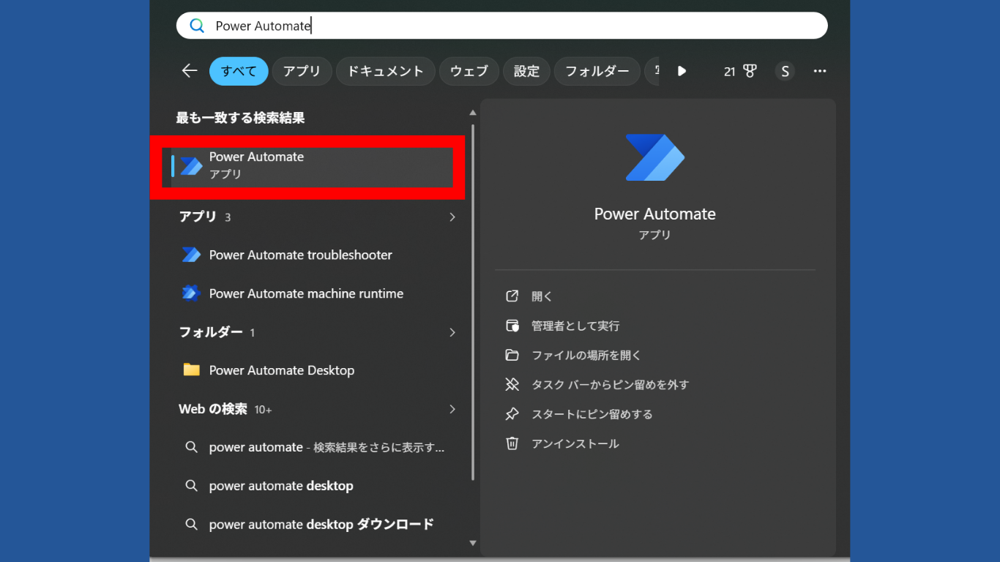

第0回 キックオフ 〜PADで何が変わるのか〜
本研修のゴール（プロフィールシート一括出力フロー）の完成イメージを動画レベルで焼き付け、
最終演習で何を作るかをイメージしてから第1回に進むための回です。あわせて、PAD のインストールとサインインまで完了させます。
A. PAD（Power Automate for Desktop）とは
PAD とは「Power Automate for Desktop」の略で、Microsoft が提供する RPA（業務自動化）ツールです。パソコンで毎日やっている面倒な繰り返し作業を、自動でやってくれるソフトです。プログラミングの知識がなくても使えて、Windows 11 では標準搭載・追加費用なしで全社員が使えます。
「Excel を開いて、セルに値を書き込んで、保存する」「ブラウザを開いて、ログインして、検索結果をスクレイピングする」といった「決まった手順の繰り返し作業」を、人間の代わりに PAD が実行してくれます。
PAD でできること
PAD が得意なのは「決まった手順の繰り返し」。業務でよくあるジャンルごとに、具体的にどんなことができるかを見てみましょう。
大量のデータ入力・転記・集計・コピペ、複数ブックをまたいだ突き合わせ、定型レポートの作成、登録済みマクロの実行まで。「毎月、同じ手順でシートを集計してレポートにまとめている」といった作業をまるごと肩代わりできます。
業務システムや Web サイトへのログイン、検索・絞り込み、画面に表示されたデータの取得（スクレイピング）、フォームへの入力・申請まで。「社内ポータルにログインして一覧を開き、必要な情報を1件ずつ拾ってくる」定型操作を代行します。
ファイルの移動・コピー・リネーム・圧縮、日付名フォルダの自動作成、大量ファイルの仕分け。「実行するたびに日時フォルダを作って、その中に名前を付けて保存する」といった整理作業を、ミスなく一瞬で終わらせます。
Outlook などで定型メールの作成・送信、添付ファイル付き送信、受信メールの仕分け・保存。「毎朝、同じ宛先に同じ書式の報告メールを送っている」業務をワンクリック化できます。
ここまでのジャンルをつなげて、ひとつの流れとして自動化できるのが PAD の真価です。「Web で取得 → Excel に転記 → 名前を付けて保存 → メールで送付」のように、複数のソフトをまたいだ作業も一気通貫で実行。本研修の最終演習が、まさにこの形のフローです。
PAD と生成AI（ChatGPTなど）の違いは？
「生成AI と何が違うの？」と思う方も多いはず。実は得意なことが全然違います。
💻 PADが得意なこと
- 毎日同じ手順でやる作業の自動化
- 大量データの処理（100件でも1000件でも）
- ExcelやWebを直接操作する
- 「決まった手順」をロボットに覚えさせる
🤖 生成AIが得意なこと
- 文章の作成・要約・翻訳
- 質問への回答・アイデア出し
- メールや企画書の下書き作成
- 「内容が毎回変わる」柔軟な作業
「手順が決まっていて、毎回同じことをやる作業」→ PADにお任せ！
「文章を考えたり、質問に答えたりする作業」→ 生成AIにお任せ！
たとえば「毎月Excelに同じ操作でデータ転記している」なら、PADで自動化できます 🚀
B. 完成動画 〜プロフィールシート一括出力フロー〜
第7回（総合演習）で受講者全員が組み上げるフローの完成動画です。
ブラウザ自動操作 → スタッフ情報を取得 → Excel に出力までを一貫して行います。
PAD のインストール〜サインイン
0-D. Power Automate for Desktop を起動する
Windows 11 には Power Automate for Desktop が標準搭載されています。
まずはスタートメニューから起動して、アプリケーションが存在するかを確認しましょう。

- スタートメニュー（左下の Windows ロゴ）をクリックする
- 検索バーに「Power Automate」と入力して検索する
- 「Power Automate」（Microsoft Corporation 製）が表示されたら、それをクリックして起動する
Microsoft Store を開き「Power Automate」で検索 →「Power Automate」（Microsoft Corporation 製）の「インストール」をクリックしてください。
0-E. Microsoft アカウントでサインインする
PAD 起動後、Microsoft アカウントでのサインインが求められます。画面の案内にしたがってサインインしてください。
- サインイン画面でメールアドレスを入力
- パスワードを入力してサインインを完了する
- 初回起動時は使用許諾やテレメトリの確認画面が出ることがある（既定のままで OK）